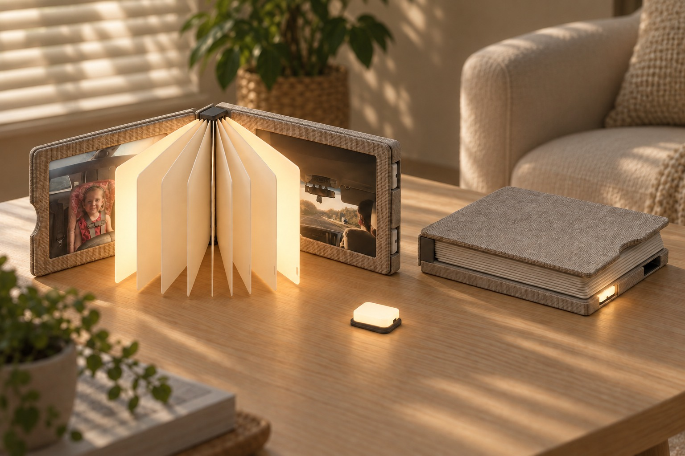
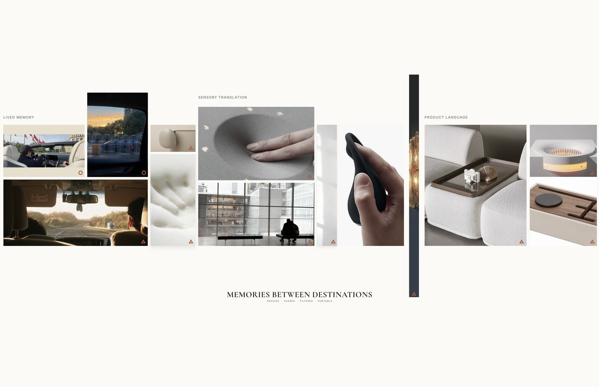
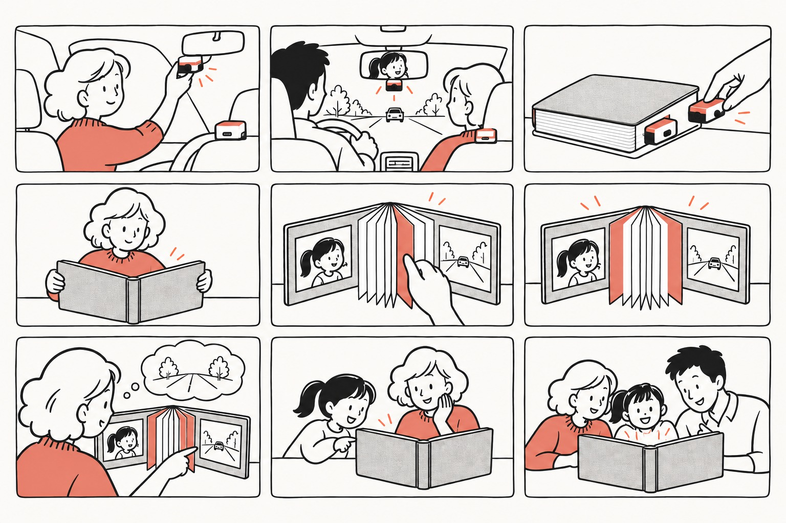
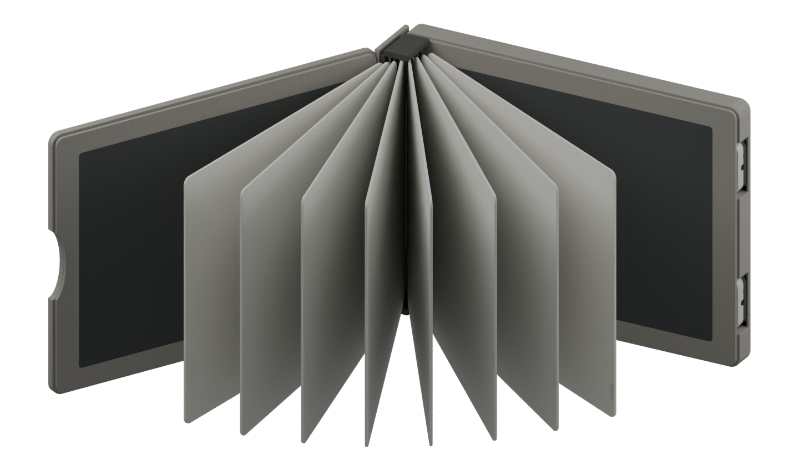
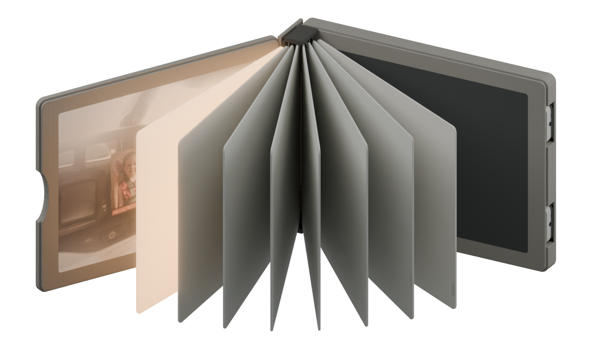
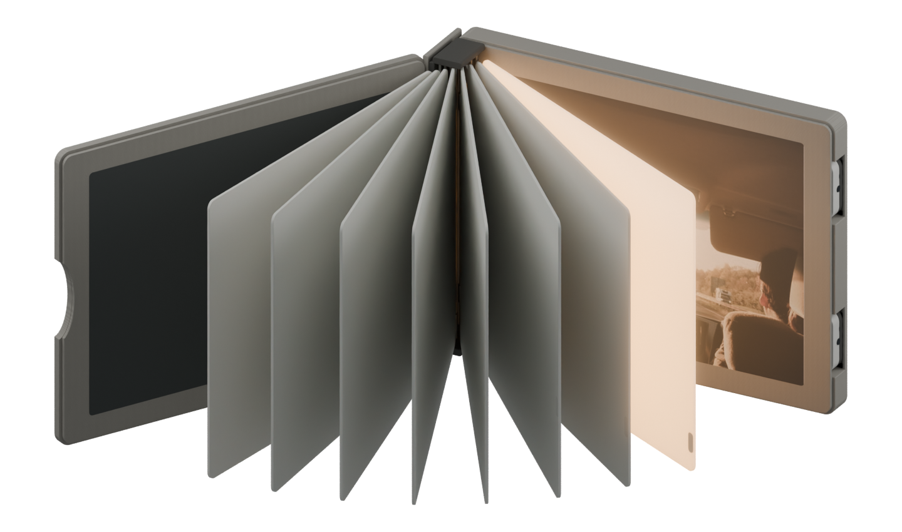
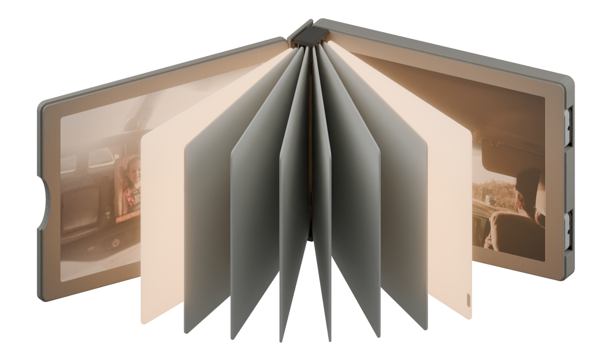
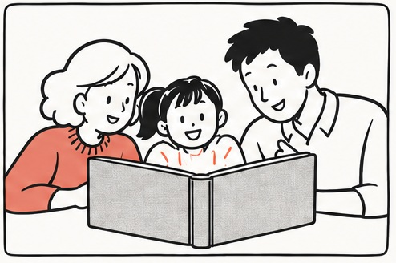

Light
Pages
Same journey.
Different memories.
Yi (Levy) Liu


How might we use shape-changing textiles to help families revisit car journeys through each other’s eyes?





Simulation
Simulation. No photo selected.
Thank you.

In the classroom · September 28, 2026 Click to enlarge or play